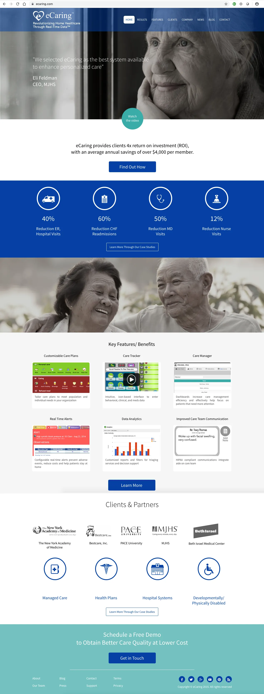
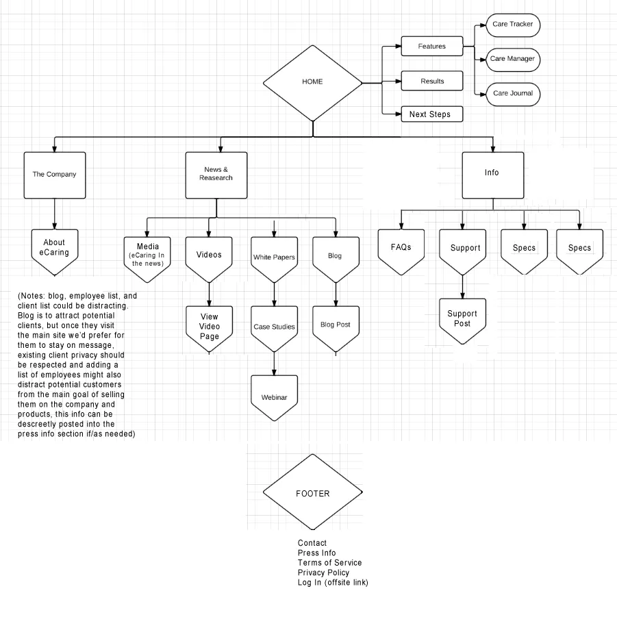
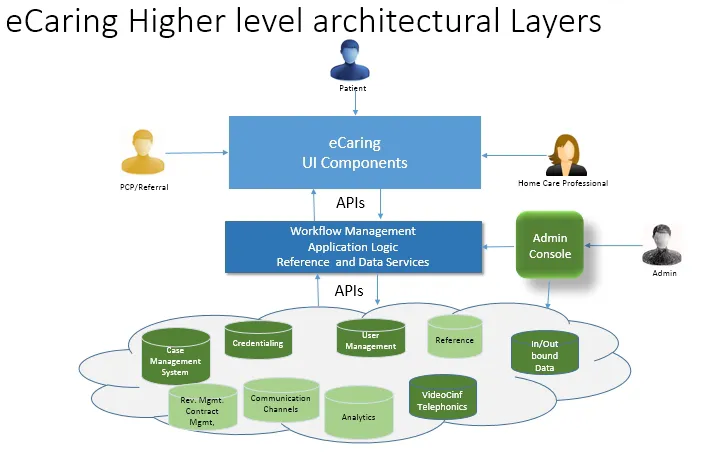
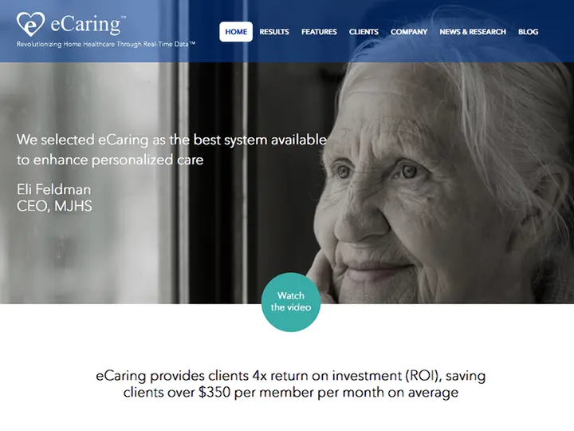
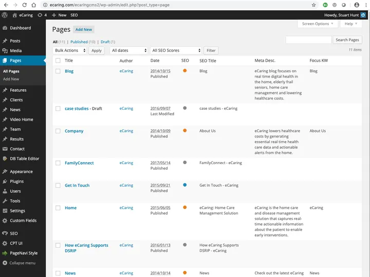
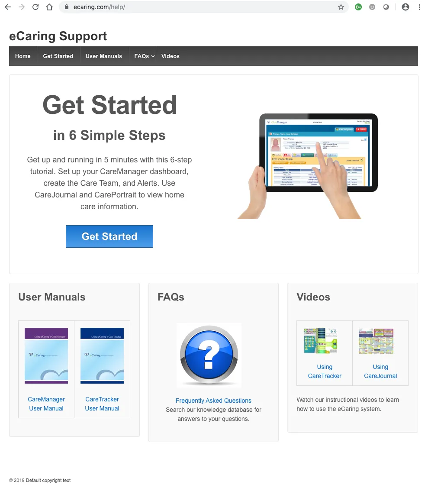
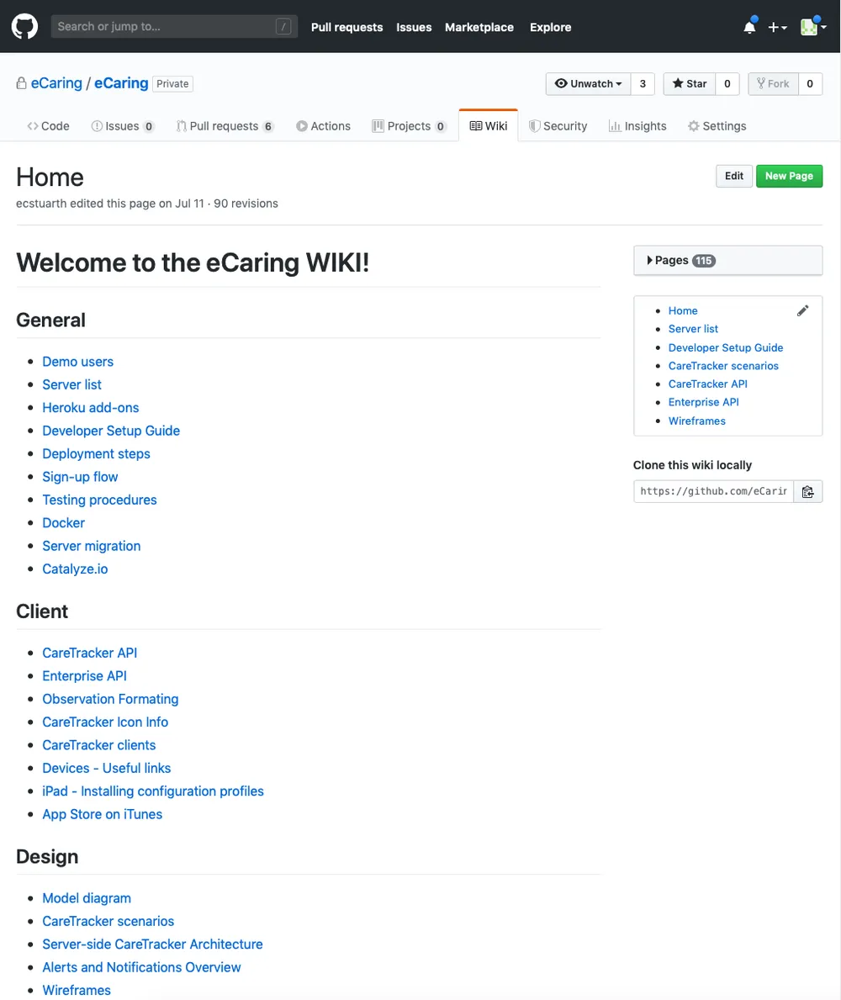
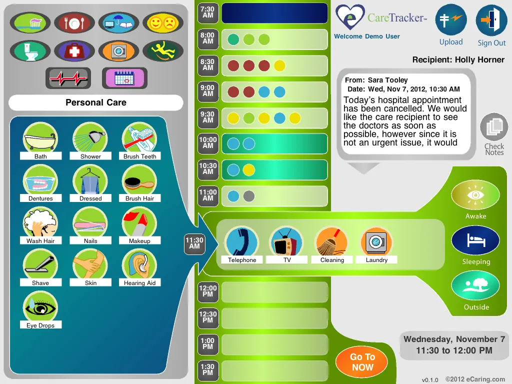
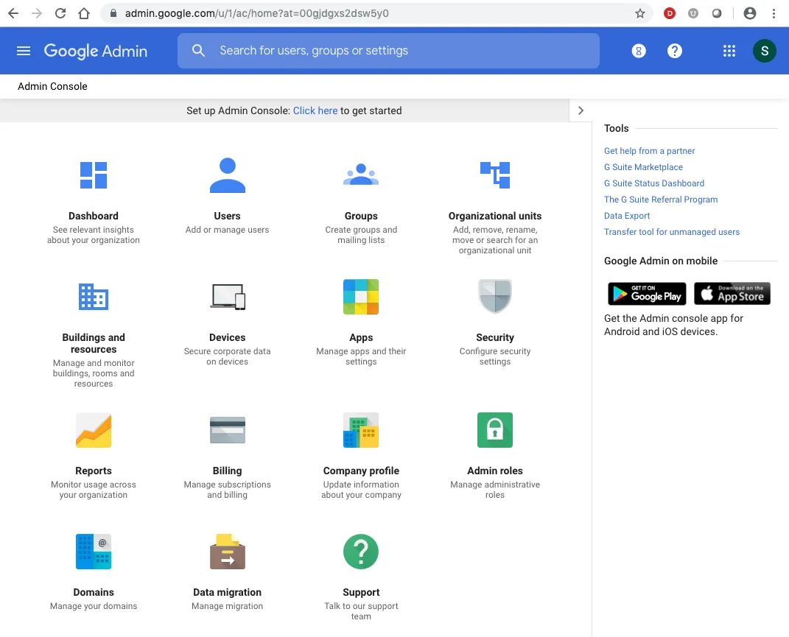

One partner for a health-tech company’s whole web presence.
eCaring helps home-care teams keep track of patients’ daily lives in real time. We planned, built and supported the digital layer around the product — the public website, the CMS behind it, the help center, the internal wiki and the touchscreen interface graphics caregivers use every day.

Many audiences, one small team.
eCaring sells to health systems and payers, but its product is used by caregivers and clinicians. Each group needs different information — and the internal team needed to keep it all current without a developer on call.
They needed a credible marketing site, a self-service support experience, a shared knowledge base for staff, and consistent visual language across the product itself.
From sitemap to support desk.
Information architecture
We started with structure, not pixels. Sitemaps mapped every page to an audience and a goal — company, news & research, results, clients, care tools and contact — and showed how visitors move between them.


A WordPress site the team can run
The marketing site tells eCaring’s story through outcomes, client voices and clear calls to action. Under the hood, a tailored WordPress setup lets staff publish news, research and results pages themselves.
- Custom page templates for results, clients and research
- Simple, well-labeled editing for non-technical staff
- Responsive, accessible front end


Help portal & internal wiki
A friendly support portal walks new customers through getting started in six simple steps, with user manuals, FAQs and how-to videos one click away. Behind the scenes, an internal wiki gives staff a single place for processes, client notes and design guidelines.


CareTracker interface & IT
For the CareTracker touchscreen app we designed a bright, icon-led interface so caregivers can log personal care, meals, mood, activities and more against a half-hour timeline in a tap or two, and read notes from the rest of the care team. We also looked after the company’s Google Workspace — users, devices, security and domains.


A complete, consistent presence.
- A marketing site that speaks to buyers while staff keep it current
- Self-service support that answers common questions before they become tickets
- Shared internal knowledge in one place
- Consistent visual language from website to product
Need one team for site, support and tools?
We’ll help you plan it, build it and keep it running.